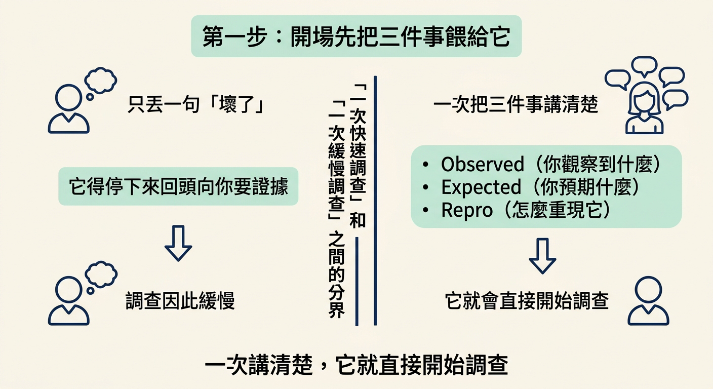
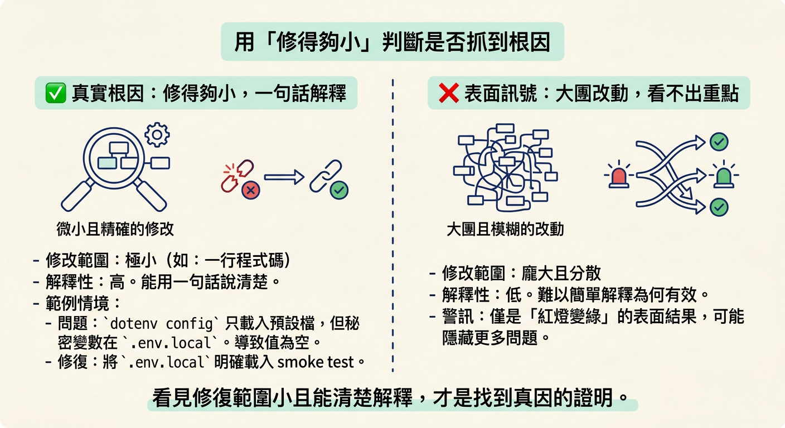
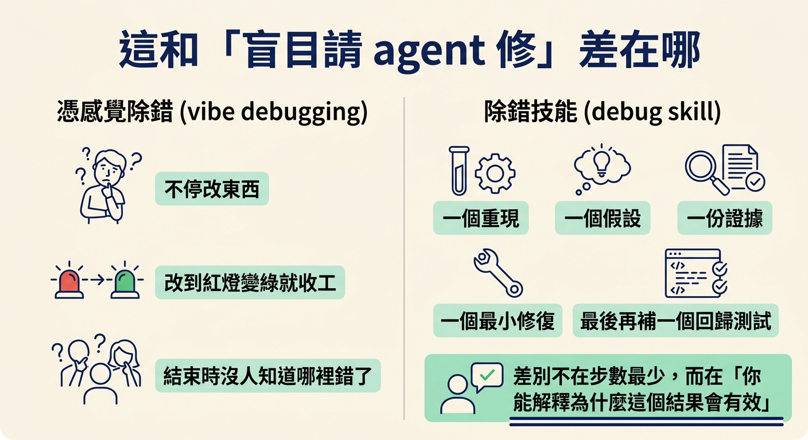

跑一次 debug skill：一開始餵它觀察到什麼、預期什麼、怎麼重現三件事，過程中盯著它只下一個假設，並用「修得夠小」判斷它是否真的找到根因。
上一節你已經知道六個步驟，也知道 debug skill 就是替你把這六步跑完的那個東西。這一節不重講方法，而是示範怎麼用好這個 skill：開場要餵它什麼、過程中要盯什麼、結束後要用什麼標準判斷它到底有沒有找到根因。
動手前你需要的東西很簡單：一個 debug skill 能跑的專案，還有一個你知道「哪裡不對」的具體現象。做完之後，你手上會有一條能重複使用的使用方式，而不是每次憑感覺跟它對話。
如果你只把 debug skill 單獨跑起來，它做的第一件事，是問你這個 bug 的細節。而整場對話最關鍵的部分，就是你在一開始給它的東西——三件事。
Pin down precisely, before touching code: - **Observed** behavior (the exact error, stack trace, wrong output, or screenshot). - **Expected** behavior. - **Repro**: the steps, inputs, and environment that trigger it. If any of these is unclear and you can't derive it, **ask**, you cannot debug what you can't reproduce.
這三件事就是：你觀察到什麼（Observed）、你預期什麼（Expected）、以及怎麼重現它（Repro）。把它們一次講清楚，它就會直接開始調查。如果你只丟一句「壞了」，它就得停下來先問你要證據——而這個差別，往往就是「一次快速調查」和「一次緩慢調查」之間的分界。

有一種情況很省事：如果你前面才剛跑過 check verify，那份產出其實已經把三件事都蒐集好了，debug skill 可以直接接手。課程 demo 裡就是這樣，直接下一行指令即可：
/debug next data model
這裡的 next data model 指的是「接著上一次 check verify 針對 data model 找到的問題繼續查」。它之所以能省略開場三件事，是因為那些資訊早已在前一輪的驗證結果裡。
如果你是自己跑、手上沒有那份驗證結果，那就說得具體一點。不要只說「資料庫有問題」，要具體到讓下一個實驗有辦法證明它對或錯。
開場資訊給足之後，它會去取得一個能隨傳隨到的重現。如果它一時重現不出來，它不會硬修——它會停下來，加上額外的 instrumentation，讓自己有能力抓到這個 bug，然後告訴你它加了什麼、得到什麼結果。
這一點值得記住：一個重現不出來的 bug，是沒辦法被證明修好的。所以當它願意停下來加觀察點，而不是直接下手改，這其實是好跡象。
接下來你要做的，就是看它怎麼下判斷。整個過程你只要盯一件事：一次一個假設。
State a single, specific, falsifiable hypothesis for the root cause, e.g. "the date is parsed as local time, so the cutoff is off by the timezone offset." Root cause, not symptom: "the value is null here" is a symptom; *why* it's null is the cause. Resist shotgun changing several things at once.
所以，如果你看到它一次改動好幾個不相關的地方，然後祈禱那個失敗自己消失——直接把它停下來。改成一次只做一個實驗、只帶一個資訊，等它確認了這個假設，才允許它動手修。這一步是你可以、也必須介入的地方。
那要怎麼知道它真的找對原因了？不是看紅燈有沒有變綠，而是看修復的大小。多數時候，真正抓到根因的修復會小到不可思議。
課程 demo 就是一個很好的例子。那次測試全部跑過、卻沒有任何失敗訊號，查到最後的原因（root cause）是：ENV 從來沒被載入。smoke test 匯入的 dotenv config，只會讀檔名剛好叫 .env 的那個檔案，但這個專案的 secrets 其實放在 .env.local。於是 .env 裡的值一直是空的，所有測試自然一路無聲地跑過。修法是把 .env 明確載進 smoke test——而這個改變，實際上只有一行。
// 壞掉時：這個 import 只會讀檔名剛好叫 .env 的檔案
import 'dotenv/config';
const databaseUrl = process.env.DATABASE_URL; // 一直都是空的
// 修好後：明確把 .env.local 載進來，secrets 其實放在那裡
import { config } from 'dotenv';
config({ path: '.env.local' });
上面這段程式碼是依照 demo 的描述重建的，不是原始碼逐字引用。它要示範的是那個形狀：一個看起來完全正常、讀起來也對的設定檔載入，實際上讀錯了檔案；真正的修復只有一行。當你看到修復這麼小、又能用一句話解釋它為什麼有效，那才是它真的找到了根因。

調查結束後，你要做的不是點頭收工，而是 review。驗收的規則就是第一節那條：不要接受一個你無法解釋的修復。它交出的報告，應該讓你一眼看到根因、最小的修復，以及下一步。
**Root cause: <the proven cause>. Fixed by <the minimal change, files touched>.** Next: /test <feature> (lock in the regression test, added inline or handed over) Heads up: <same cause also at <where>, fixed too · or a design flaw → /architect <what>> (omit if none)
報告會先講根因與修復，重現與證據只是過程的足跡、不是頭條。最後那個 Heads up 是提醒你：同一個根因常常也藏在別的地方；如果它其實是一個「本來就沒做對的決定」，那就該轉去 /architect，而不是在 code 上補丁。
如果這場調查不簡單，你可以把它放進一個專門的調查 subagent，讓它反覆動用工具的那段過程不要塞滿你的主對話。
- `model`: set explicitly to a strong model, do not inherit the session model (Claude Code: `sonnet`) - `description: "Debug: <symptom>"` - Tools: `Read`, `Bash`, `Grep`, `Glob`, `Edit`, `Write` - `prompt`: this loop + the captured symptom + reproduction + the relevant `AGENTS.md` (inlined). Require it to report the root cause with evidence, not just "fixed it."
兩個細節：模型要明確指定成強模型，不要沿用你目前的 session 模型；還有，要求它「用證據講出根因」，而不是只回一句「修好了」。
一般的「幫我修好這個錯誤」提示，會鼓勵 agent 一直改東西，改到紅燈變綠燈為止。有時候它真的會成功，然後你會在一片沒有解釋的情況下結束——你不知道剛剛到底哪裡錯了。課程給這件事取了一個名字：vibe debugging（憑感覺除錯），而你知道那通常怎麼收場。
debug skill 不一樣。它要求的是：一個重現、一個假設、一份證據、一個最小修復，最後再補一個回歸測試。它的優勢不是「用最少的步數」，而是「你能解釋為什麼這個結果會有效」。

用好 debug skill 的關鍵，在開場與 review 兩端。開場時餵它三件事——觀察到什麼、預期什麼、怎麼重現；如果前一輪 check verify 已經蒐集好，直接讓它接手即可。過程中盯它「一次只下一個假設」，看到它一次改多個不相關的地方就停下來。結束後，用「修得夠小」判斷它是否抓到根因，並守著那條規則：不要接受一個你無法解釋的修復。skill 能把重現、定位、測試、修復、保護做得比你快，但「這是否真的證明了原因」這個判斷，永遠是你的。
到這裡，這個節點的四步就走完了：先問是哪一種壞、分流後選對回應、對一般 code bug 套上科學方法，最後用 debug skill 實際跑一輪。接下來你可以用 /tackle 針對每一步驗證自己的掌握程度。